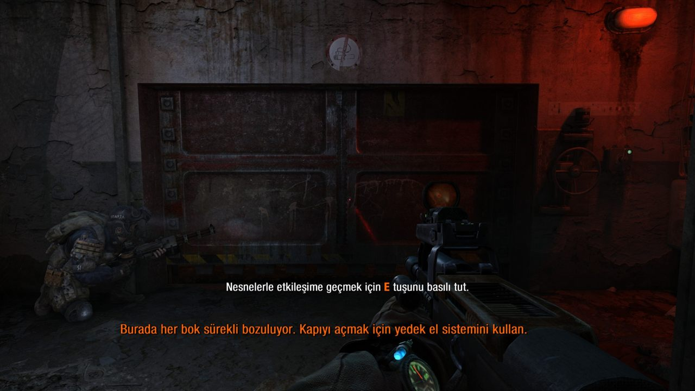
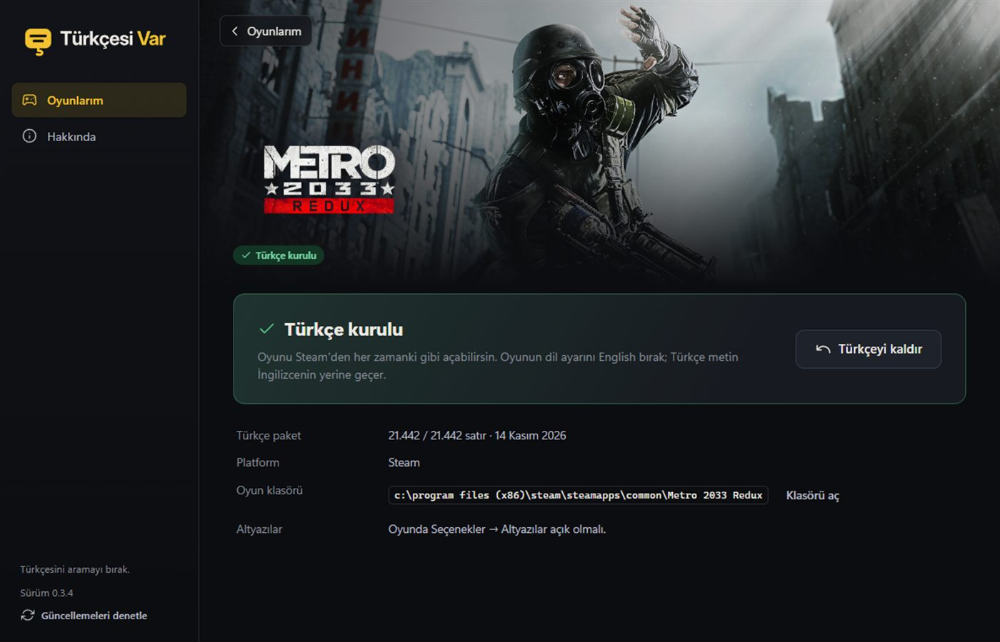
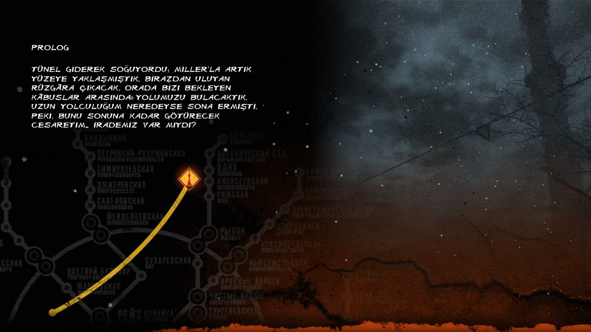
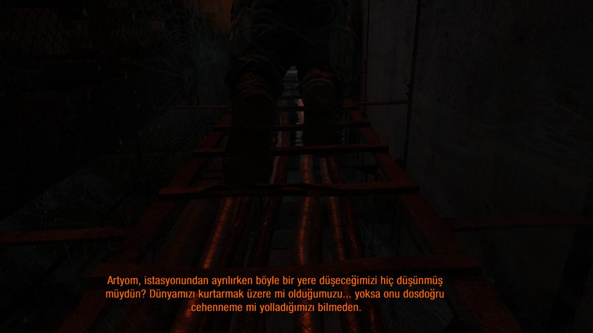
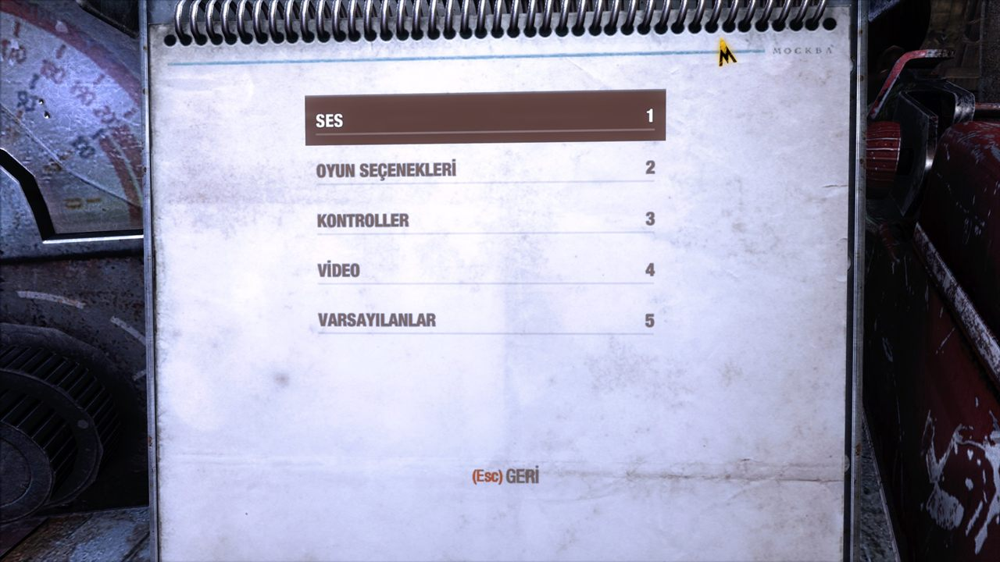

Metro 2033 Redux
Steam
21.442 satır — menüler, altyazılar, notlar ve ipuçları.
✓ HazırÜcretsiz · Açık kaynak · Windows
Tek tıkla kur, tek tıkla kaldır. Türkçesi Var oyun dosyası ya da DLL dağıtmaz; Türkçe yama senin bilgisayarında, senin oyunundan hazırlanır.
Windows 10/11 · Kurulum için yönetici izni gerekmez · Bütün sürümler

Menüler, altyazılar, notlar, ipuçları: her satır Türkçe. Ğ, ş, ı, İ harfleri oyunun kendi yazı tipine eklenir; kare ya da soru işareti çıkmaz.

Steam
21.442 satır — menüler, altyazılar, notlar ve ipuçları.
✓ HazırSteam · Epic Games
37.652 satır — telsiz ve düşman konuşmaları, günlükler ve iki DLC (The Two Colonels, Sam's Story) dahil.
✓ HazırTürkçesini istediğin oyunu Discord'daki oyun-istekleri kanalına yaz ya da var olan isteğe 👍 bırak. En çok istenen oyunlar önce çevrilir.
Oyun isteGitHub hesabın varsa: oyun isteği formu. Hile koruması olan çevrimiçi oyunlar güvenlik için çevrilmez.
Metro 2033 Redux, Türkçesi Var ile. Görüntüler doğrudan oyundan alındı.



Kurulum dosyasını çalıştır. Uygulama Steam ve Epic Games'te kurulu oyunlarını kendisi bulur.
Oyunu seç, Türkçe yap'a bas. Birkaç saniye sürer. Oyunda dili English bırak, altyazıları aç.
Oyunu her zamanki gibi aç. Beğenmezsen Türkçeyi kaldır: oyun birebir eski hâline döner.
Oyun güncellenirse uygulamayı açman yeter; Türkçeyi yeni sürüme kendiliğinden yeniden kurar.
Forumlardaki “yamayı indir, dosyaların üstüne kopyala” yönteminden farkı burada.
Hayır. Kendi başına oyun çevirmez; yalnızca Türkçesi hazırlanmış oyunlara yama kurar. Her oyunun dosya yapısı, yazı tipi ve Türkçe harf desteği ayrı ayrı çözülüp çevirisi kontrol edildiği için oyunlar tek tek eklenir.
English. Türkçe metin İngilizcenin yerine geçer. Altyazıları görmek için oyun ayarlarından altyazıları aç.
Uygulama henüz dijital imzalı olmadığı için Windows bu uyarıyı gösterebilir. Ek bilgi → Yine de çalıştır ile devam edebilirsin. Dosyanın resmi olduğundan emin olmak için yalnızca GitHub sayfasından indir.
Epic Games'teki oyunlar kendiliğinden bulunur. Başka bir yerden kurduysan oyunun kartındaki Klasörü seç ile klasörünü göster. Xbox Game Pass ve Microsoft Store sürümleri dosyaları kilitli olduğu için çoğu zaman desteklenemez.
Yapay zekâ yardımıyla, oyundaki seslendirmeyle uyumlu olacak biçimde çevrildi. Özel adlar ve terimler için ortak bir sözlük kullanıldı; karakter adları ve lakaplar olduğu gibi bırakıldı. Hatalı ya da garip bir satır görürsen Discord'daki çeviri-hataları kanalına yaz; düzeltmeler bir sonraki sürümle herkese gelir.
Önce uygulamada Türkçeyi kaldır'a bas, sonra uygulamayı Windows'tan kaldır. Steam'in “dosya bütünlüğünü doğrula” özelliği de oyunu eski hâline getirir.
Hayır. Türkçesi Var ücretsizdir ve öyle kalacak. Reklam yok, premium sürüm yok.
Sıradaki oyunu birlikte seçiyoruz. Oyun iste, çeviri hatası bildir, kurulumda yardım al. Yeni oyun ve sürüm duyuruları ilk Discord'da.
Discord'a katılTürkçesi Var bedava ve öyle kalacak. Ama her yeni oyunun çevirisi de testi de emek ve para istiyor. Bir çay parası bile sıradaki oyunu öne çeker.
Destek ol